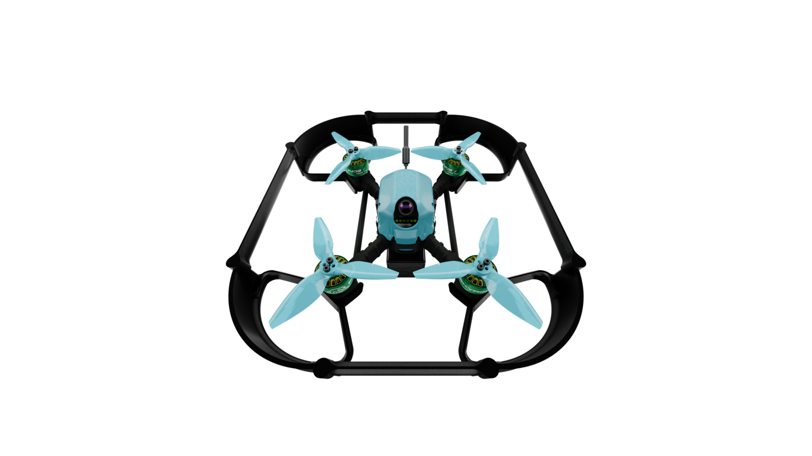

SKYRIS PILOT FPV

Конструктор спортивного квадрокоптера SKYRIS PILOT FPV разработан для практического обучения навыкам пилотирования от первого лица.
PILOT FPV — полноценный образовательный инструмент для будущих гонщиков. Он собран из лучших компонентов, представленных на рынке, а его рама изготовлена из инновационных композитных материалов, обеспечивающих легкость, прочность и высокую маневренность. В комплекте идёт подробная документация, пресеты настроек и всё необходимое, чтобы начать путь в мир FPV-пилотирования и гонок. Конструктор помогает пройти весь путь от основ до мастерства: освоить пайку и сборку, научиться настраивать оборудование и управлять дроном на высокой скорости. Это возможность не только собрать и запустить свой первый спортивный квадрокоптер, но и подготовиться к участию в FPV гонках.